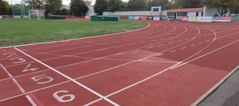
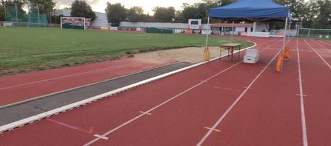
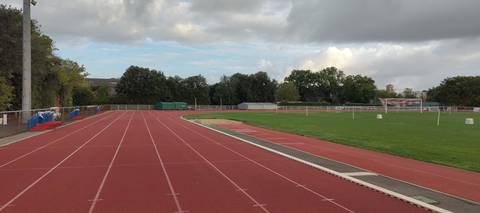
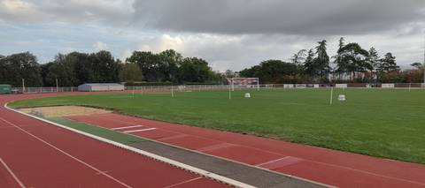
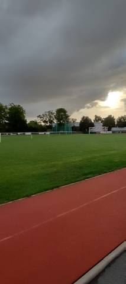
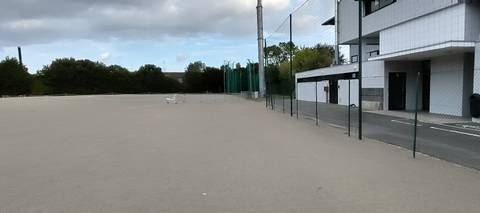

{kind=link}
{kind=link}
{kind=link}
{kind=link}
{kind=link}
{kind=link}
J'y étais comme juge le 30 août 2026. C'est une piste exceptionnelle : il y a tout là-bas, tous les agrès, il ne manque rien — les quatre sauts, les quatre lancers, et même la rivière de steeple, ce qui est rare. La piste est bien entretenue, le marquage est net, et tous les équipements sont là pour bien pratiquer. Si vous cherchez où vous entraîner à Challans, c'est ici qu'il faut venir, et pas à la cendrée de la Cailletière à l'autre bout de la ville, que j'ai trouvée fermée le même jour.
Complexe sportif Jean Léveillé
boulevard jean yole, 85300 Challans · Vendée
Complexe sportif Jean Léveillé is an athletics venue in Challans (Vendée), Pays de la Loire, France. It has a 400 m synthetic (tartan) running track with 6 lanes. It also offers steeplechase, long jump pit, triple jump, high jump area, pole vault, shot put, discus, hammer throw and javelin. The venue provides floodlighting, changing rooms and showers.
Photos






A photo is surely still missing
Jump pits and throwing areas are what public data describes worst, and what gets photographed least. A close-up of the ground, a covered vault pit, a sand box gone to weeds: each adds what no field carries.
Send a photoNo GitHub account?Track
- Surface
- Synthetic (tartan)
- Lap length
- 400 m
- Track type
- Athletics stadium oval
- Lanes
- 6
- Setting
- Outdoor
- Opened
- 1996
Recorded facilities
- Steeplechase
- Long jump pit
- Triple jump
- High jump area
- Pole vault
- Shot put
- Discus
- Hammer throw
- Javelin
Access & amenities
- Free access
- No / members only
- Floodlighting
- Yes
- Changing rooms
- Yes
- Showers
- Yes
- Toilets
- Yes
- Stand
- 300 seats
Visite du 30 août 2026 au matin, à l'occasion d'une compétition : l'enceinte était ouverte, mais parce qu'il y avait épreuve. Rien n'a donc été constaté des conditions d'accès ordinaires : une porte ouverte un jour de concours ne fait pas un accès permanent. La fiche affiche « non / réservé » parce que c'est ce que le ministère déclare pour la piste ; cette visite ne le contredit pas, mais ne le confirme pas davantage. Le stade passe localement pour ouvert à peu près en continu ; personne ne l'a vérifié un jour sans compétition. Aucun panneau d'horaires ni de règlement n'a été relevé à l'entrée. Un seul passage un jour ordinaire suffirait à trancher. Les 6 vestiaires, douches et sanitaires affichés sont déclarés à l'échelle du complexe, gymnases et salles compris.
Athlete reviews
Le recensement décrit ici une piste et ne dit rien de ce qu'on y saute ni de ce qu'on y lance : sous l'installation I850470014, Data ES porte une « Piste d'athlétisme Jean Yole », découverte, 400 m, synthétique, éclairée, 300 places de tribune, 6 vestiaires, mise en service en 1996 — et pas un seul agrès. Les neuf agrès de cette fiche viennent donc entièrement du terrain, relevés le 30 août 2026 par un juge en poste ce jour-là. C'est un des rares sites de l'annuaire à porter la nomenclature complète, steeple compris. Six couloirs sur l'anneau. Le chiffre est mesuré, pas estimé : sur l'orthophoto IGN 2025, une coupe perpendiculaire à la ligne droite opposée donne sept lignes blanches régulièrement espacées de 1,20 m — soit six couloirs, à un pixel près de la largeur réglementaire de 1,22 m. Les photos le recoupent au sol, où les couloirs sont numérotés jusqu'à 6 avec le couloir 1 contre la bordure. La ligne droite de la tribune est plus large, 9,60 m bord à bord, ce qui ferait huit couloirs ; le profil y est brouillé par le couloir d'élan du sautoir voisin et le chiffre n'est pas assez sûr pour être écrit. La rivière de steeple est visible sur l'orthophoto, fosse maçonnée à cadre sombre et bassin clair, plantée dans l'herbe juste à l'intérieur du virage sud-est ; deux tapis bâchés verts occupent le tablier synthétique du même virage. La cage de lancer, grillage vert monté sur mâts courbes avec ses deux vantaux relevables, se dresse au bord du grand terrain stabilisé au sud-ouest — et le recensement le confirme sans le dire : l'équipement E007I850470014, déclaré « Terrain de football stabilisé », porte « Lancer » parmi ses activités. Le tartan est décrit comme bien entretenu et les photos le montrent au marquage net, sans fissure ni mousse visible. Le ministère ne déclare pourtant aucune rénovation depuis la mise en service de 1996 ; l'écart entre cette date et l'état constaté n'a pas été élucidé, et le champ renovation reste vide. Le nom flotte : le ministère enregistre l'installation sous « Complexe sportif Jean Léveillé » et la piste sous « Piste d'athlétisme Jean Yole », du nom du boulevard qui la borde. Les deux appellations circulent à Challans. Le titre retient la première, cette phrase existe pour que la seconde trouve aussi la fiche. La commune a une seconde piste de 400 m, en cendrée, au complexe sportif de la Cailletière (I850470009), à moins de deux kilomètres au nord-est — trouvée fermée le même jour.
Other venues in the department
- College Milcendeau
- Complexe sportif de la Cailletière
- Salle Omnisports
- Parc des Sports
- Stade d'Athletisme
- College Public Pierre Garcie Ferrande
Report an error or complete this record
Réf. I850470014 · Source: Data ES + community — Data ES, French ministry for sport, Licence Ouverte 2.0. Records are self-declared and may be incomplete: check access conditions before travelling.